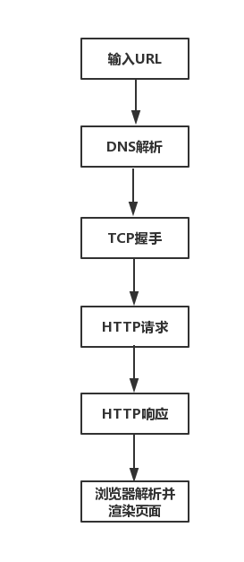
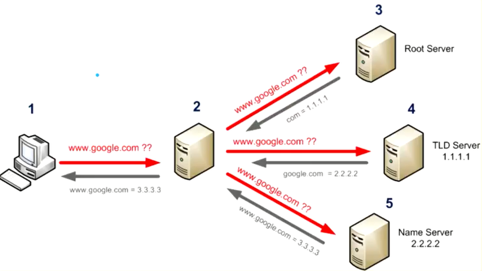

原文连接:https://www.cnblogs.com/yinhaiying/p/11984003.html
从输入URL到页面加载发生了什么？
最近在进行前端性能优化方面的一些工作，发现前端性能方面太广，不知道如何下手。参考了许多文章，发现最终都会归咎于一个非常经典的问题：从输入URL到页面加载发生了什么？通过连接这个过程，然后针对性地对每个过程进行优化，最终实现的就是我们的前端性能优化。本篇文章主要介绍一些基础性的概念，很少涉及真正的性能优化。
具体过程？
打开浏览器，输入URL，到页面展示出来，这个中间大致经历了这些过程：
- 输入URL
- DNS解析
- TCP握手
- HTTP请求
- HTTP响应返回数据
- 浏览器解析并渲染页面

上面粗劣的介绍了输入URL到页面加载的大致过程，但是缺少更加详细的过程，事实上w3c给我们提供了一个接口performance.timing更加详细地介绍了每个过程，并且可以通过这个过程获取页面性能数据。如下图所示：

上图的过程大致可以分为三个大的阶段：
- 缓存相关：主要包括Prompt for unload,redirect和App cache3个过程
- 网络相关：主要包括DNS,TCP和HTTP(Request,Response)3个过程
- 浏览器相关：主要包括Processing和onload两个过程
通过将整个过程细分为3个大的阶段，然后再每个阶段每个阶段介绍，这样方便我们记忆和理解。
缓存相关
1、卸载已有的页面(Prompt for unload)
我们在页面中输入URL时，首先会卸载掉原来的页面。这是为了释放页面占据的内存，否则没请求一次URL都占据一份内存，会导致浏览器占据内存越来越大。
2、重定向(redirect)
所谓的重定向实际上就是先从本地缓存中去查找请求的内容，如果本地缓存中有则直接使用，如果没有则向服务器进行请求(这只是简单的理解，实际上如何获取数据是存在缓存策略的)。事实上，每次从服务器获取到文件，文件会被暂时存放到一个指定区域，当我们下次再次请求这个文件时，浏览器会首先从这个区域查看是否已经存在过这个文件，如果已经存在，则不需要再次进行请求数据。
3、App cache
网络相关
4、DNS
DNS(Domain Name System)域名系统，顾名思义是用来解析域名系统的。在网络中，我们人适合于记忆文本，因此我们输入的都是www.baidu.com这种字符串，但是计算机适合于处理数字，每一台计算机对应的是一个IP地址。因此，如果我们要访问一个指定的资源，必须先找到对应的服务器，而找到服务器需要先将域名转换为对应的IP地址。而DNS就是帮助我们实现这个过程。
域名级别
域名的级别是指一个域名由多少级组成，域名的各个级别被"."分开，总而言之，有多少个点就是几级域名。
顶级域名在开头有一个点(.com .cn .net)
一级域名就是在"com cn net"前加一级 (baidu.com)
二级域名就是在一级域名前再加一级(www.baidu.com)
二级域名及以上级别的域名，统称为子域名，不在注册域名的范畴中
域名资源记录
| 记录类型 | 含义 |
|---|---|
| SOA(StartOf Authority,起始授权记录) | 一个区域解析库中有且只能有一个SOA记录，而且必须放在第一条 |
| A记录(主机记录,针对IPV4的记录) | 用于名称解析的重要记录，将特定的主机名映射到对应主机的IP地址上 |
| CNAME记录(别名记录) | 用于返回另外一个域名，即当前查询的域名是另一个域名的跳转，主要用于域名的内部跳转，为服务器配置提供灵活性 |
| NS记录(域名服务器记录) | 用于返回保存下一级域名信息的服务器地址。该记录只能设置为域名，不能设置为IP地址 |
| MX(邮件记录) | 用户返回接收电子邮件的服务器地址 |
| C记录(IPV6记录) | 用于将特定的主机名映射到一个主机的IPV6地址 |
域名服务器

域名的解析需要用到一系列的服务器，而不是简单的一个服务器。比如：用户想要解析www.google.com:
- 在本机上输入www.google.com
- 2号服务器是用户在自己电脑上填写的DNS地址，由于域名和ip地址的对照表非常庞大，因此2号服务器会进行分层管理。2号服务器进行域名解析是会先从缓存中进行查找，如果一个域名被频繁访问，通常会被保存到缓存中。如果DNS这没有对应的域名-IP缓存，那么就需要向根服务器(Root Server)发起请求。
- 根服务器负责维护全球的域名-IP地址解析。根服务器会检查域名后缀(比如.com)，根据不同的后缀，交给不同的TLD服务器处理。获取到后缀后，返回对应的TLD服务器的ip地址(com = 1.1.1.1)。
- DNS拿到TLD服务器的IP地址后，继续向TLD服务器进行询问。TLD服务器只返回顶级域名对应的IP(google.com = 2222)，交给顶级域名对应的Name Server处理。
- DNS服务器获取到顶级域名的IP后，继续向Name Server进行询问。Name Server返回具体的域名对应的IP地址。
- DNS服务器获取到具体的域名对应的IP后，会先进行缓存，避免下次请求时继续多次询问。
5、TCP
TCP是HTTP的下层协议，我们想要通过HTTP进行请求，必须先通过TCP进行连接，也就是说HTTP是依赖于TCP的。TCP的作用就是连接指定IP地址的服务器(通过DNS已经获取到对应的服务器IP地址)。
每次连接的时候，TCP都会经历三次握手，每次断开连接时TCP都会经历四次挥手。这些过程就是可以优化的地方，这里不做阐释。
6、HTTP请求(Request)和响应(Response)
在 HTTP/1.x 中，如果客户端要想发起多个并行请求以提升性能，则必须使用多个 TCP 连接。 这是 HTTP/1.x 交付模型的直接结果，该模型可以保证每个连接每次只交付一个响应（响应排队）。 更糟糕的是，这种模型也会导致队首阻塞，从而造成底层 TCP 连接的效率低下。 也就是说在目前的HTTP1.X的协议下，浏览器对资源的并发请求个数是有限制的。 等到HTTP2到来的时候，通过二进制分帧层进行优化。 HTTP/2 中新的二进制分帧层突破了这些限制，实现了完整的请求和响应复用：客户端和服务器可以将 HTTP 消息分解为互不依赖的帧，然后交错发送，最后再在另一端把它们重新组装起来。
浏览器相关
7、文档解析和DOM的加载(Processing)
HTTP请求后返回的是一个文本，我们需要将文本转换成DOM树，然后加载DOM
8、触发Onload事件(onload)
DOM加载完成之后，触发onload事件。